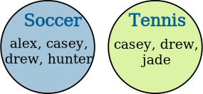
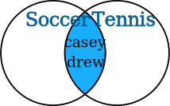
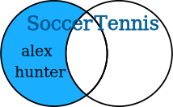
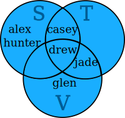
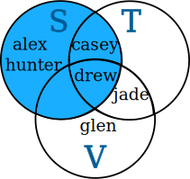
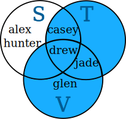
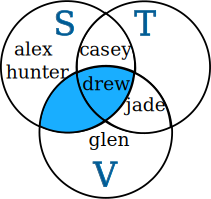
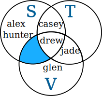
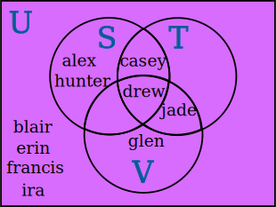
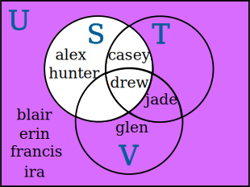

Sets and Venn Diagrams
Sets

A set is a collection of things.
For example, the items you wear is a set: these include hat, shirt, jacket, pants, and so on.
You write sets inside curly brackets like this:
{hat, shirt, jacket, pants, ...}
You can also have sets of numbers:
- Set of whole numbers: {0, 1, 2, 3, ...}
- Set of prime numbers: {2, 3, 5, 7, 11, 13, 17, ...}
Ten Best Friends
You could have a set made up of your ten best friends:
- {alex, blair, casey, drew, erin, francis, glen, hunter, ira, jade}
Each friend is an "element" (or "member") of the set. It is normal to use lowercase letters for them.

Now let's say that alex, casey, drew and hunter play Soccer:
Soccer = {alex, casey, drew, hunter}
(It says the Set "Soccer" is made up of the elements alex, casey, drew and hunter.)
And casey, drew and jade play Tennis:
Tennis = {casey, drew, jade}
We can put their names in two separate circles:

Union
You can now list your friends that play Soccer OR Tennis.
This is called a "Union" of sets and has the special symbol ∪:
Soccer ∪ Tennis = {alex, casey, drew, hunter, jade}
Not everyone is in that set ... only your friends that play Soccer or Tennis (or both).
In other words we combine the elements of the two sets.
We can show that in a "Venn Diagram":

Venn Diagram: Union of 2 Sets
A Venn Diagram is clever because it shows lots of information:
- Do you see that alex, casey, drew and hunter are in the "Soccer" set?
- And that casey, drew and jade are in the "Tennis" set?
- And here is the clever thing: casey and drew are in BOTH sets!
All that in one small diagram.
Intersection
"Intersection" is when you must be in BOTH sets.
In our case that means they play both Soccer AND Tennis ... which is casey and drew.
The special symbol for Intersection is an upside down "U" like this: ∩
And this is how we write it:
Soccer ∩ Tennis = {casey, drew}
In a Venn Diagram:

Venn Diagram: Intersection of 2 Sets
Which Way Does That "U" Go?

Think of them as "cups": ∪ holds more water than ∩, right?
So Union ∪ is the one with more elements than Intersection ∩
Difference
You can also "subtract" one set from another.
For example, taking Soccer and subtracting Tennis means people that play Soccer but NOT Tennis ... which is alex and hunter.
And this is how we write it:
Soccer − Tennis = {alex, hunter}
In a Venn Diagram:

Venn Diagram: Difference of 2 Sets
Summary So Far
- ∪ is Union: is in either set or both sets
- ∩ is Intersection: only in both sets
- − is Difference: in one set but not the other
Three Sets
You can also use Venn Diagrams for 3 sets.
Let us say the third set is "Volleyball", which drew, glen and jade play:
Volleyball = {drew, glen, jade}
But let's be more "mathematical" and use a Capital Letter for each set:
- S means the set of Soccer players
- T means the set of Tennis players
- V means the set of Volleyball players
The Venn Diagram is now like this:

Union of 3 Sets: S ∪ T ∪ V
You can see (for example) that:
- drew plays Soccer, Tennis and Volleyball
- jade plays Tennis and Volleyball
- alex and hunter play Soccer, but don't play Tennis or Volleyball
- no-one plays only Tennis
We can now have some fun with Unions and Intersections ...

This is just the set S
S = {alex, casey, drew, hunter}

This is the Union of Sets T and V
T ∪ V = {casey, drew, jade, glen}

This is the Intersection of Sets S and V
S ∩ V = {drew}
And how about this ...
- take the previous set S ∩ V
- then subtract T:

This is the Intersection of Sets S and V minus Set T
(S ∩ V) − T = {}
Hey, there is nothing there!
That is OK, it is just the "Empty Set". It is still a set, so we use the curly brackets with nothing inside: {}
The Empty Set has no elements: {}
Universal Set
The Universal Set is the set that has everything. Well, not exactly everything. Everything that we are interested in now.
Sadly, the symbol is the letter "U" ... which is easy to confuse with the ∪ for Union. You just have to be careful, OK?
In our case the Universal Set is our Ten Best Friends.
U = {alex, blair, casey, drew, erin, francis, glen, hunter, ira, jade}
We can show the Universal Set in a Venn Diagram by putting a box around the whole thing:

Now you can see ALL your ten best friends, neatly sorted into what sport they play (or not!).
And then we can do interesting things like take the whole set and subtract the ones who play Soccer:

We write it this way:
U − S = {blair, erin, francis, glen, ira, jade}
Which says "The Universal Set minus the Soccer Set is the Set {blair, erin, francis, glen, ira, jade}"
In other words "everyone who does not play Soccer".
Complement
And there is a special way of saying "everything that is not", and it is called "complement".
We show it by writing a little "C" like this:
Sc
Which means "everything that is NOT in S", like this:
Sc = {blair, erin, francis, glen, ira, jade}
(exactly the same as the U − S example from above)
Summary
- ∪ is Union: is in either set or both sets
- ∩ is Intersection: only in both sets
- − is Difference: in one set but not the other
- Ac is the Complement of A: everything that is not in A
- Empty Set: the set with no elements. Shown by {}
- Universal Set: all things we are interested in